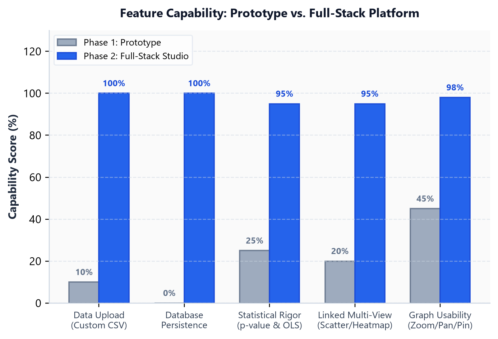
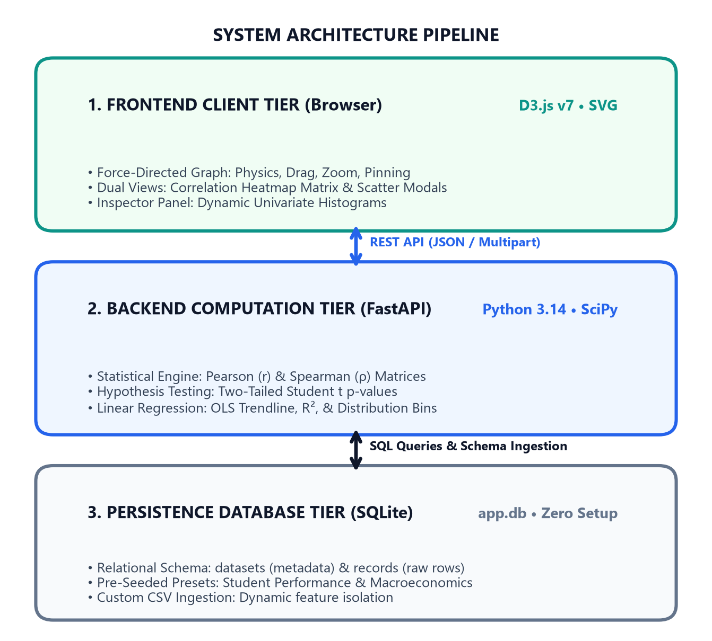
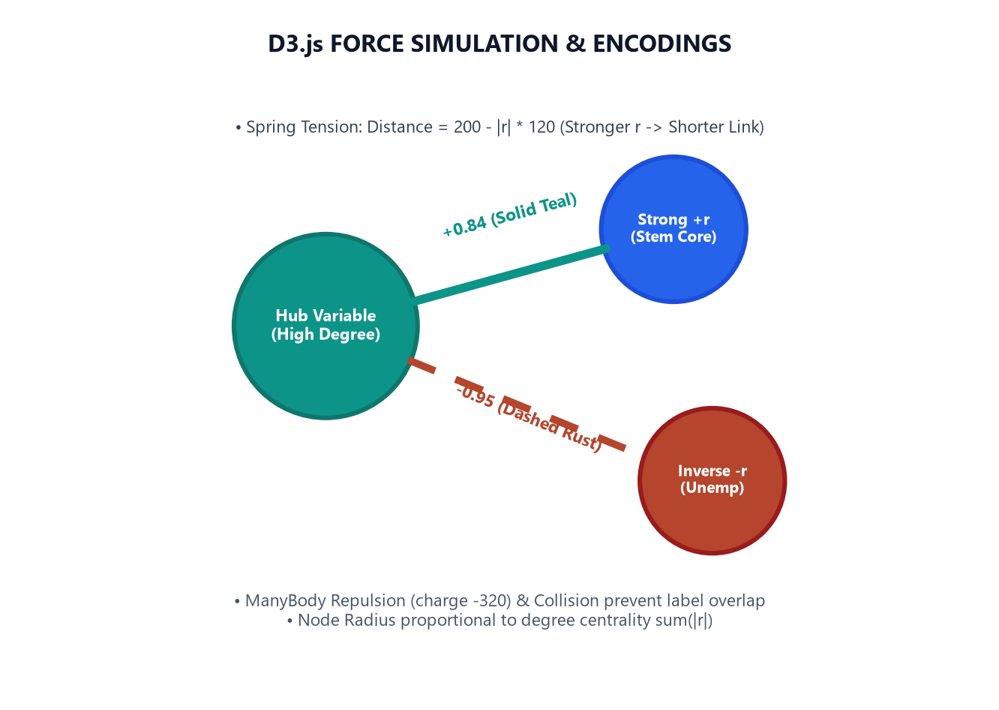
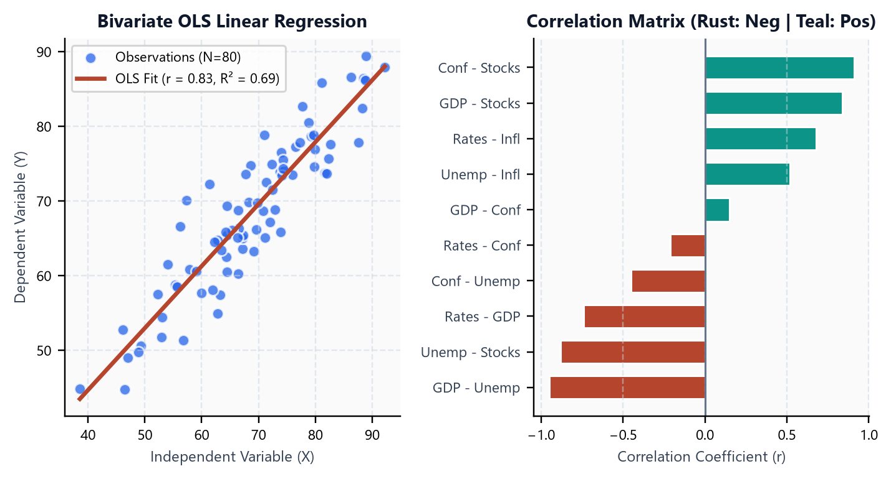
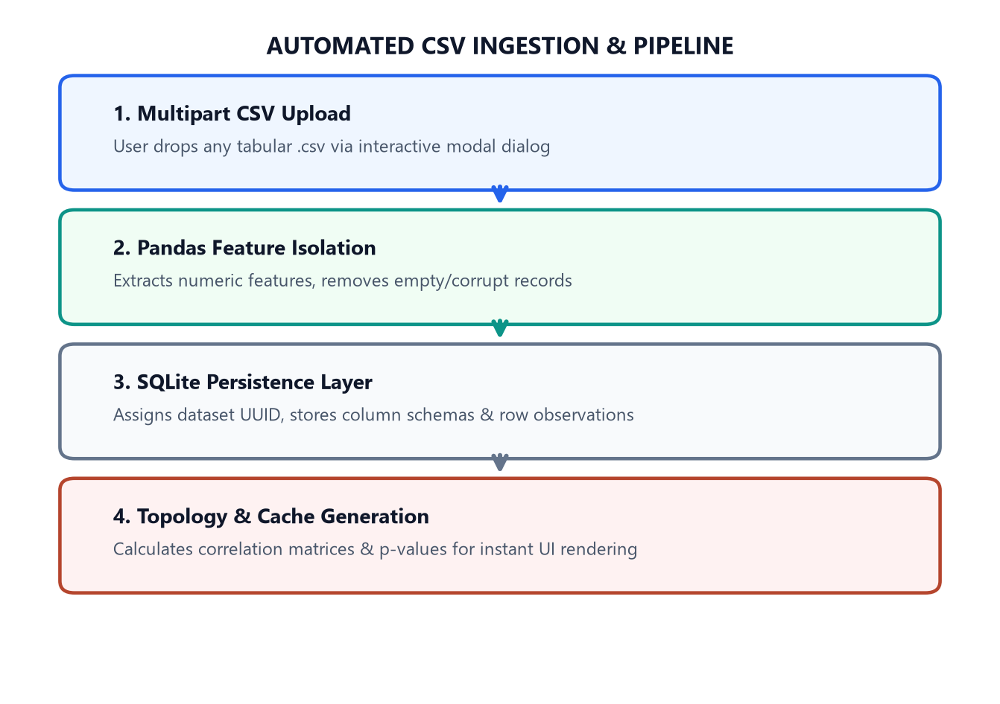

Interactive Graph Analytics, Statistical Modeling & High-Dimensional Feature Exploration
correlation_network.html).
api.js, graph.js, heatmap.js, charts.js, app.js). No bulky bundler dependencies, achieving lightning-fast initial load times.app.db) storing dataset metadata, schemas, and raw observation records with ACID compliance.
d3.zoom), Reset View, and double-click coordinate pinning (fx, fy).


| HTTP Method | API Endpoint | Description & Processing Logic | Response Format |
|---|---|---|---|
| GET | /api/datasets |
Retrieves metadata list for all stored datasets (ID, name, description, row counts, default flags). | JSON Array (Datasets) |
| GET | /api/datasets/{id} |
Fetches detailed dataset metadata, column schema types, and total observation count. | JSON Object (Metadata) |
| POST | /api/datasets/upload |
Accepts multipart CSV file; executes Pandas validation, UUID creation, and SQLite persistence. | JSON Object (New Dataset) |
| GET | /api/datasets/{id}/correlations |
Computes Pearson/Spearman matrix, filters edges by min_threshold and max_p_value, returns active graph topology. | JSON (Nodes, Links, Stats) |
| GET | /api/datasets/{id}/scatter |
Extracts paired bivariate coordinates (X, Y) and calculates SciPy OLS regression slope, intercept, R², and p-value. | JSON (Points, Fit Metrics) |
| Analytical Engine | Technology Stack | Mathematical Formula | Analytical Capability | Latency |
|---|---|---|---|---|
| Pearson Linear Correlation | SciPy / NumPy | r = cov(X,Y) / (σx · σy) | Linear co-variation & edge weight scaling | < 12 ms |
| Spearman Rank Correlation | SciPy Stats | ρ = 1 - 6Σd² / n(n²-1) | Non-parametric monotonic dependency | < 15 ms |
| Significance Testing (p-value) | Student t-Distribution | t = r √( (n-2)/(1-r²) ) | Spurious correlation noise elimination | < 6 ms |
| OLS Linear Regression | SciPy linregress | y = β₁x + β₀ (R²) | Bivariate scatter slope & trendline fit | < 8 ms |
| D3 Force Simulation Physics | D3.js v7 Web Engine | Velocity Verlet Integration | Real-time 60 FPS organic graph layout | < 1 ms/frame |
/docs.start.bat or run python run.pypresentation.pptx